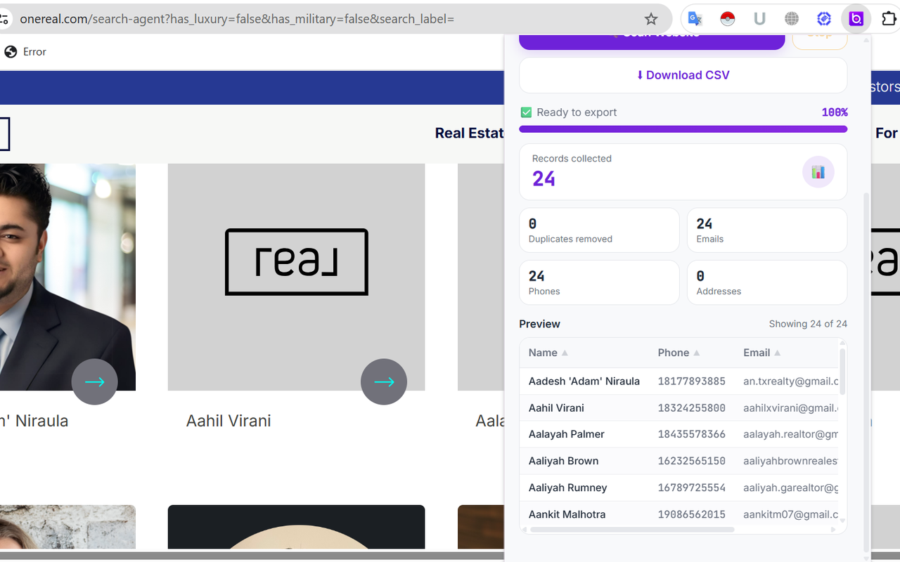
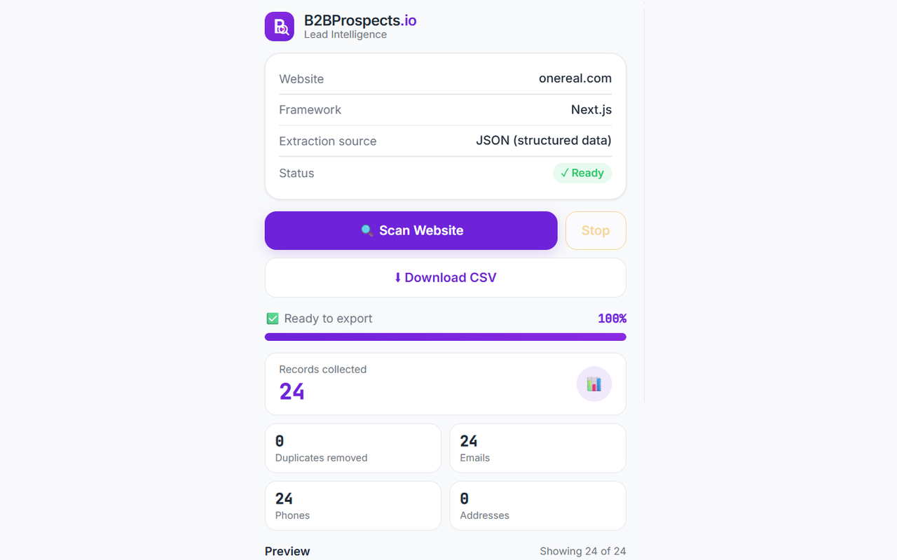
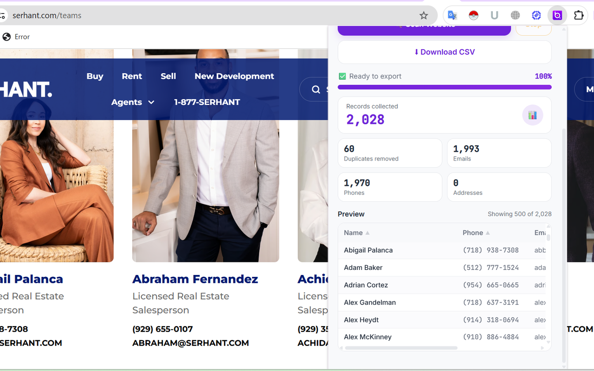

Detect
Find available structured sources and supported website patterns before extraction.
B2BProspects.io detects available structured data on supported websites, organizes extracted records into a clean preview, and lets you export your results to CSV.

A focused extraction workflow designed to help you move from a website to an organized dataset without turning every research task into manual copy-and-paste work.
Find available structured sources and supported website patterns before extraction.
Collect supported fields into a consistent record preview you can inspect.
Download your reviewed records as CSV for spreadsheets, analysis and workflows.
Real extension screenshots can be showcased here as the product evolves.


Visit the website containing the business information you want to research.
Launch B2BProspects.io and let it detect available data sources.
Inspect the records and export the data to CSV.
Request organized realtor and real-estate professional datasets by market, approximate volume and required fields. Availability is confirmed before fulfillment.
Tell us the state, city, market or other geographic criteria you need.
Request the business fields that matter to your outreach workflow.
We'll review the request and confirm available coverage and delivery options.
Start with the free extension and see whether B2BProspects.io fits your workflow.
Get the Extension